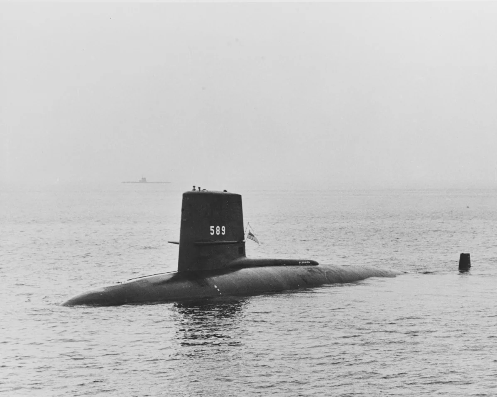
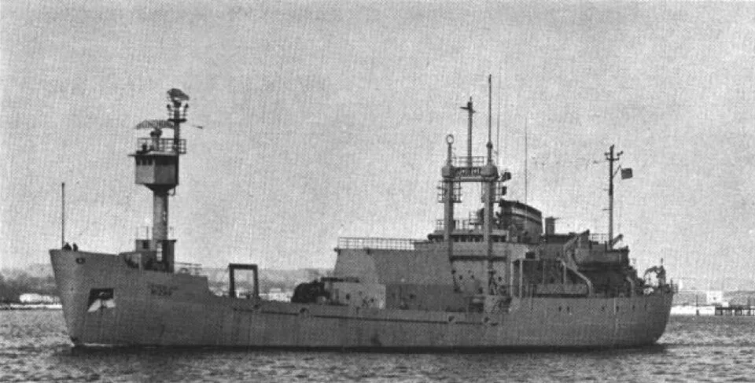
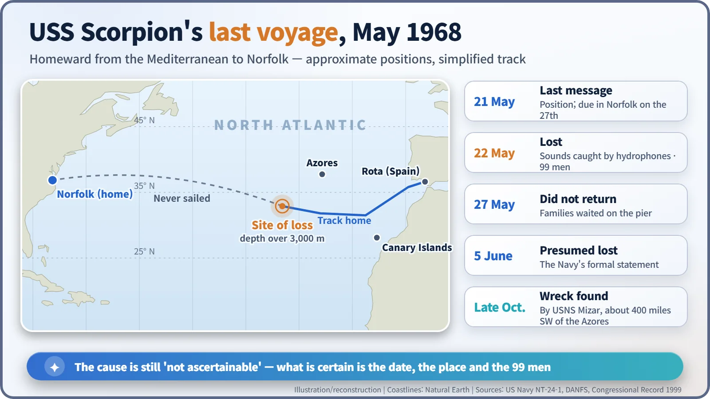
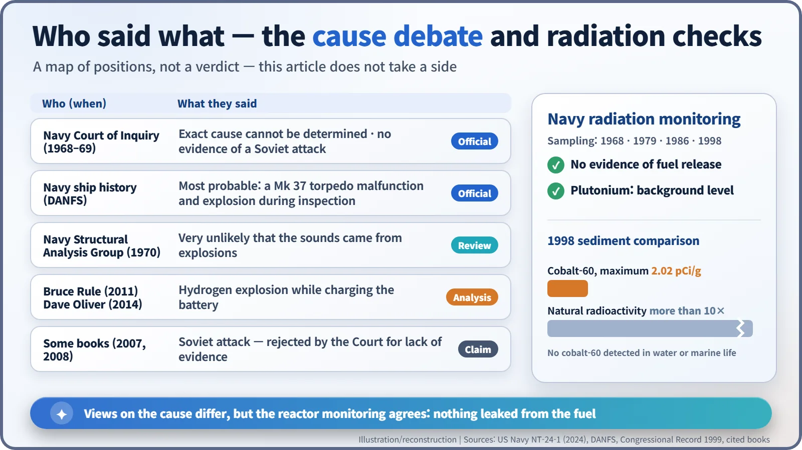

Nuclear History · 169
The Report That Wrote "We Don't Know" — The Loss of USS Scorpion (1968)
Five days before she was due home, a nuclear submarine vanished in the Atlantic, and the official answer is still that the cause cannot be ascertained.
On 22 May 1968 the U.S. nuclear attack submarine Scorpion was lost in the Atlantic with all 99 men aboard, five days before she was due home in Norfolk. The Navy's Court of Inquiry concluded that the certain cause could not be ascertained, and several competing explanations have been put forward since. Navy monitoring of the site has found no evidence of radioactivity released from the reactor fuel.
A pier in the rain
Monday, 27 May 1968, Pier 22 at the naval base in Norfolk, Virginia. In driving rain, families stood looking out to sea. The nuclear-powered submarine USS Scorpion (SSN-589) was due home that day after more than three months in the Mediterranean. The appointed hour came and went. The afternoon wore on. The submarine never surfaced. There were 99 men aboard. [3]

A boat that inherited her name
Scorpion was a Skipjack-class nuclear attack submarine, launched on 19 December 1959 at the Electric Boat yard in Groton, Connecticut, and commissioned on 29 July 1960. She had, in a sense, inherited her name: the hull first laid down as Scorpion had been turned into the ballistic-missile submarine George Washington, and the name passed to this new boat. [2]
She left for the Mediterranean on 15 February 1968 and started for home in mid-May. According to a study by Mark A. Bradley, reprinted in the Congressional Record in 1999, on 20 May the submarine force command added a task: take a look at a group of Soviet vessels near the Canary Islands. On the evening of 21 May, Scorpion radioed her position and her expected arrival on the 27th. It was the last message anyone received from her. [2] [3]
What the ocean's ears heard
The U.S. Naval Nuclear Propulsion Program's official report states that Scorpion sank on 22 May 1968. That was pieced together later, and the key clue was sound. Underwater listening devices (hydrophones, in effect microphones in the sea) had recorded short, sharp acoustic signals that day, followed by the noises of a hull collapsing. By comparing when the same sounds reached different listening stations, analysts could narrow down where they came from, rather like drawing circles on a chart and finding where they cross. [1] [3]
The Navy declared an emergency search on the afternoon of 27 May and formally announced on 5 June that Scorpion was "presumed lost". At the end of October, the Navy oceanographic research ship USNS Mizar found the hull, broken into two main sections, more than 3,000 m (10,000 ft) down, about 400 miles southwest of the Azores. The following year the deep-diving bathyscaphe Trieste II went down to take photographs. [1] [2]


The Court of Inquiry: "cannot be ascertained"
On 4 June the Navy set up a Court of Inquiry under retired Vice Admiral Bernard L. Austin, the same officer who had led the inquiry into the loss of USS Thresher five years earlier. The court reconvened on 6 November after studying Mizar's photographs, but its answer did not change. In findings made public on 31 January 1969, it concluded that the certain cause "cannot be ascertained from evidence now available". It ruled out a Soviet attack because there was no evidence of an attack or of weapons being fired. [3] [4]
Other views have appeared since. Here they are, each with the name of who holds it:
- The Navy's ship history (DANFS): the cause is still not ascertainable, but the most probable event was the inadvertent activation of a Mark 37 torpedo during inspection, leading to an explosion in the tube. [2]
- The Navy's Structural Analysis Group (1970): after re-examining the acoustic record, it judged it very unlikely that the sounds came from explosions, and leaned towards flooding. [4]
- Acoustic analyst Bruce Rule and retired naval officer Dave Oliver: each has argued, in books published in 2011 and 2014, for a hydrogen explosion while the battery was being charged. [4]
- Some books (2007, 2008): argue for a Soviet attack, a theory the Court of Inquiry had already rejected for lack of evidence. [3] [4]
This article does not take a side. When the official record still says "we don't know", declining to supply a neat answer is one way of respecting that record.

What became of the reactor on the seabed?
Scorpion carried one reactor and two torpedoes with nuclear warheads. According to the Navy's report, seawater and seabed sediment near the hull were analysed after the loss, and samples of water, sediment and marine life were collected again in 1979, 1986 and 1998. None showed any evidence of radioactivity released from the reactor fuel. Only cobalt-60 from the reactor's coolant system turned up, at low levels, in sediment around the wreck. The 1998 maximum was 2.02 picocuries per gram, less than a tenth of the natural radioactivity already in the sediment. Plutonium levels, the Navy says, matched the background left by fallout from past nuclear weapons tests. [1]
One more point. After Thresher the Navy created SUBSAFE, a certification programme for submarine safety. Scorpion's 1967 overhaul was cut back, and she is reported to have been operating under a depth limit without having completed that certification work. No official finding has named this as the cause of her loss. [4]
An honest "we don't know"
Scorpion was the second nuclear submarine the U.S. Navy lost, after Thresher, and so far the last. What is certain is the date, the place, and the 99 men who did not come home. When not every question can be answered, an honest record writes "we don't know". Guarding that blank space may be the most fitting tribute to the families who waited in the rain on Pier 22. [1]